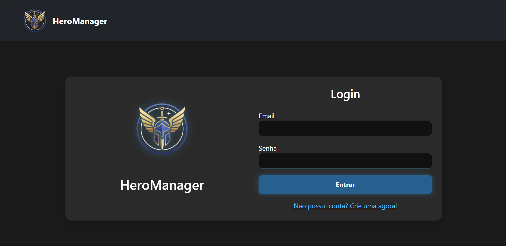

HeroManager
Projeto desenvolvido como um sistema web para gerenciamento de uma equipe de heróis. A aplicação permite cadastrar e autenticar usuários, consultar heróis e visualizar informações como classe, habilidades, força, defesa e velocidade. Também é possível montar uma equipe com até cinco heróis ativos, enquanto os demais ficam armazenados na base, permitindo trocar, adicionar ou remover membros conforme a necessidade. O projeto envolve desenvolvimento de interface web, criação de funcionalidades de gerenciamento e integração com banco de dados, utilizando Python com Flask no back-end e HTML, CSS e JavaScript no front-end. Para acessar o código e a estrutura do projeto, clique aqui.